원본 CNN과 공식 starter · 실제 Mac CPU 비교
Fold 0의 같은 INNER 3,000개에서 저장된 CNN 최적 예측과 원형 starter를 비교했습니다. 추가 피팅·OUTER/Test 접근은 하지 않았습니다.
| 방법 | INNER RMSE |
|---|---|
| 공식 starter · 항상 0.1 | 0.418974 |
| 별도 대조군 · TRAIN 평균만 사용 | 0.309864 |
| 원본 Wide BG Mask CNN · best epoch 19 | 0.090849 |
공식 starter의 5fold INNER 15,000개 합산 RMSE는 0.418974입니다. 공개 Benchmark 0.753867825가 이 상수 알고리즘으로 생성됐다는 연결은 확인되지 않았습니다. CNN의 [0,1] clipping은 변경 0건으로 RMSE가 동일합니다. 현재 INNER 수치만으로 공식 LB를 예측할 수 없습니다.
동일 샘플 비교 · 정답 구간별 결과 · 사이트/참조 그룹별 상세 지표 · 공식 starter 5fold 전수 결과
최신 R4 데이터
VTUAD 119클립·22개 선택 그룹, 동일 생성 레시피의 5-fold 데이터입니다. 원천 분리와 남아공 배경의 24시간 purge를 유지했습니다. R5 GPU 본학습이 진행 중입니다. Fold 0 원본 CNN의 최적 INNER RMSE 0.090849는 내부 모델 선택용 결과이며, 공식 LB/전체 OOF가 아닙니다.
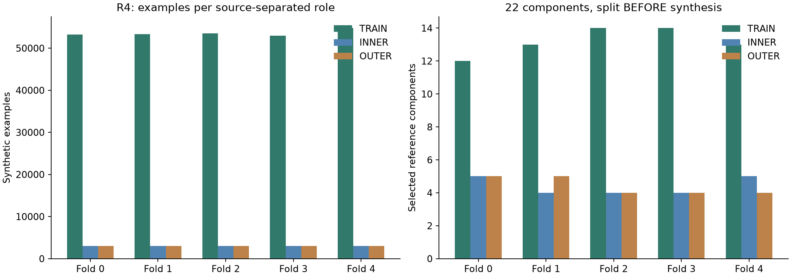
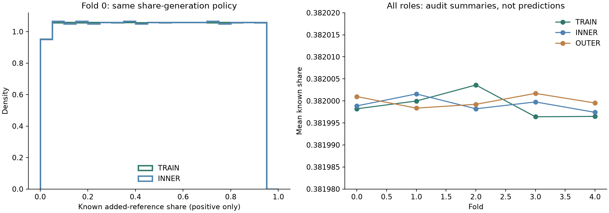
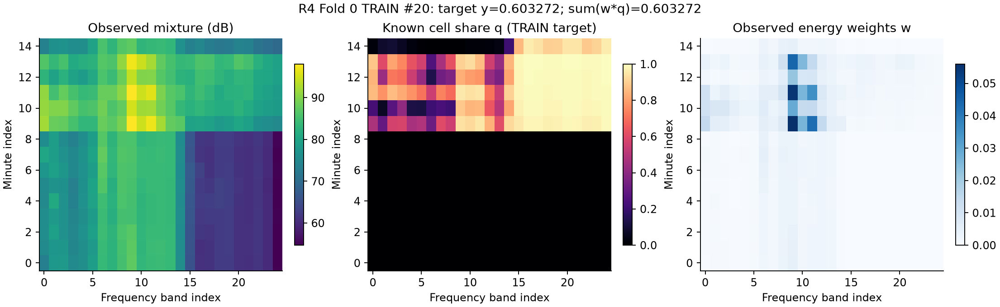
원본 EDA
처음 내려받은 대회 데이터의 구조·결측·품질을 실제 파일로 점검한 결과입니다. 그림을 누르면 원본 크기로 열립니다.


심화 EDA · 역사 기록
지점·수신기·기간·스펙트럼·결측·관측 예시를 담았습니다. 일부 그림은 과거 Test 기술 통계/도메인 진단입니다. 현재 R4/R5 생성 정책·모델·가중치 튜닝의 근거로 사용하지 않습니다.
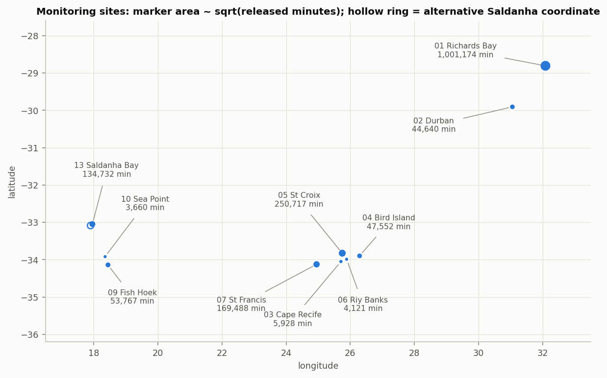
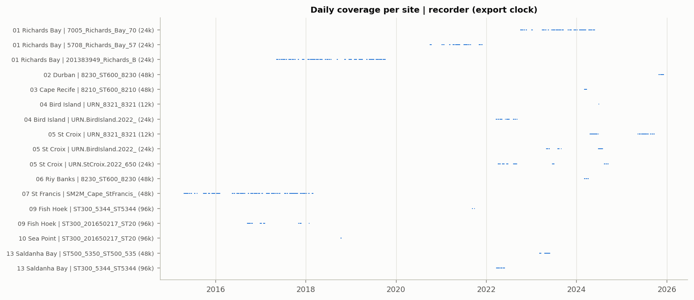
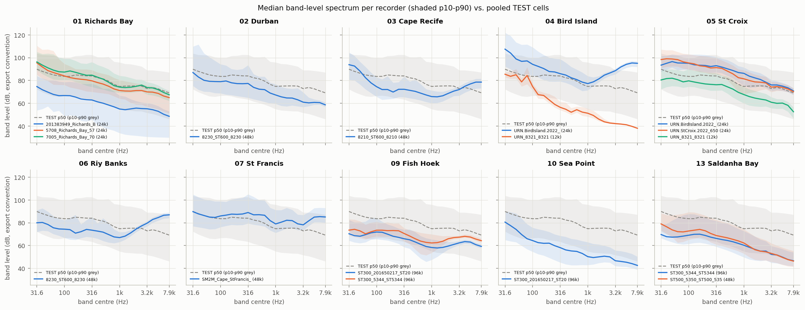
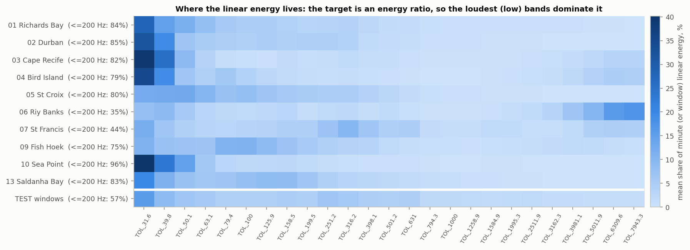
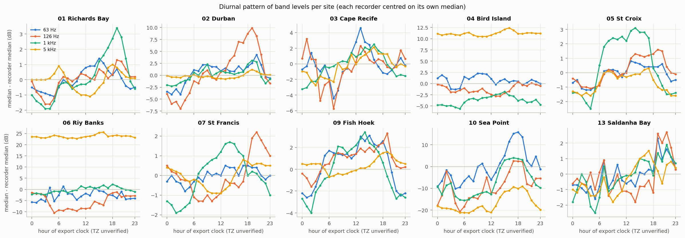
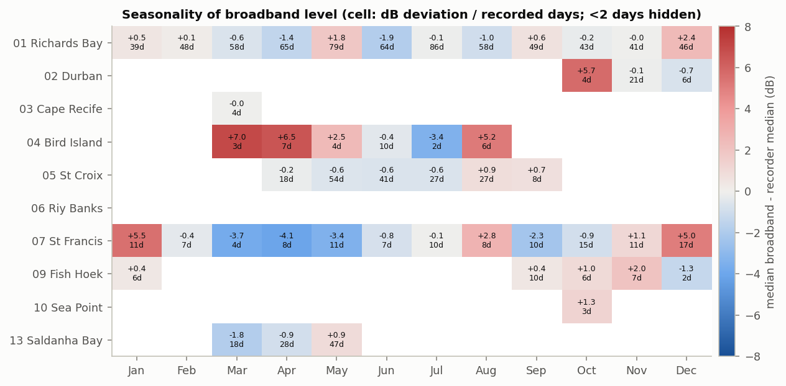
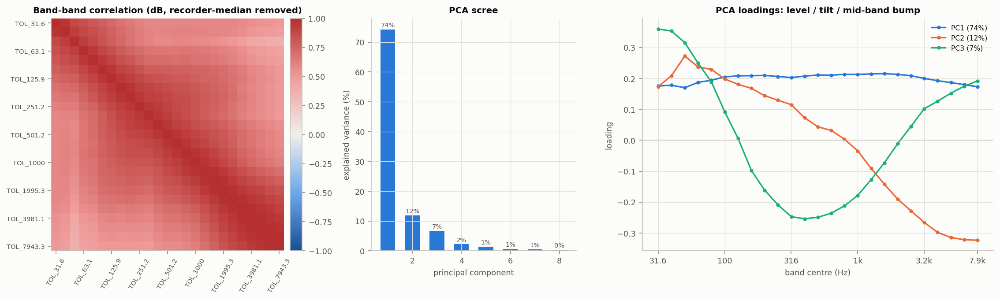
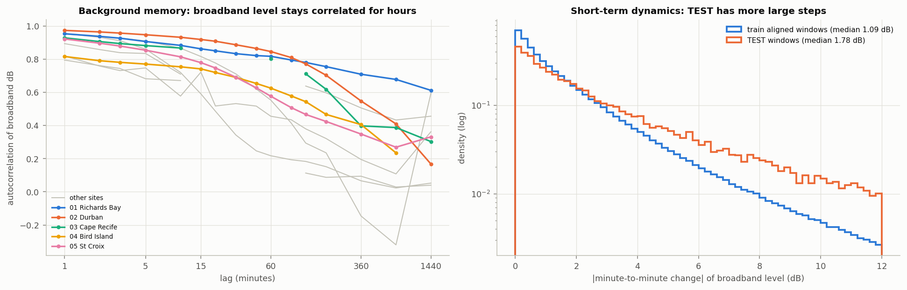
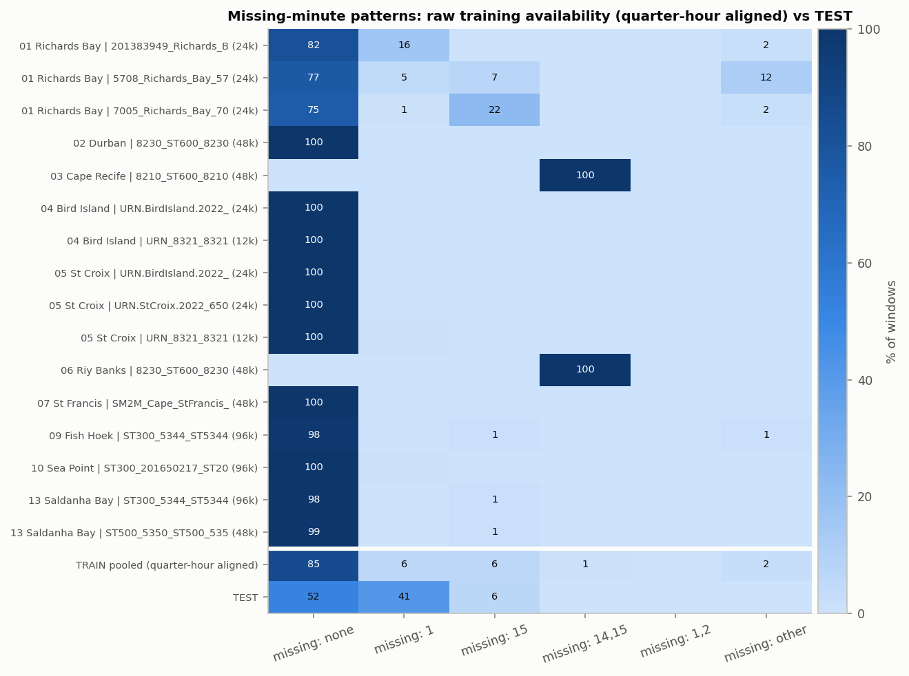
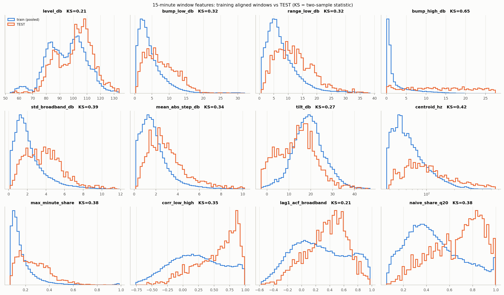
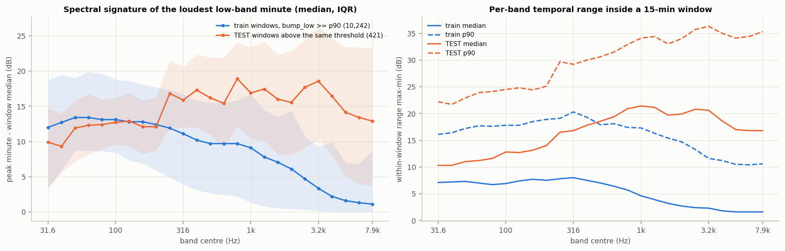
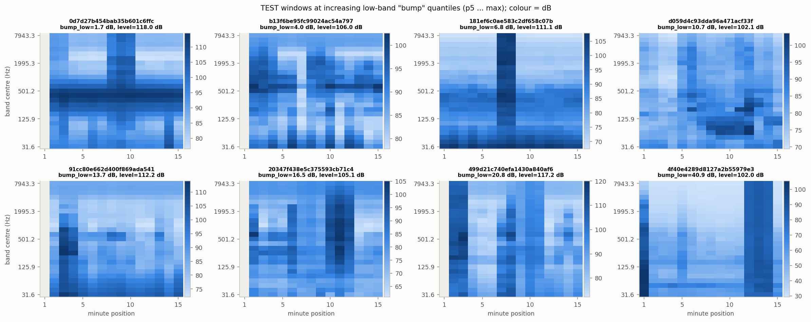
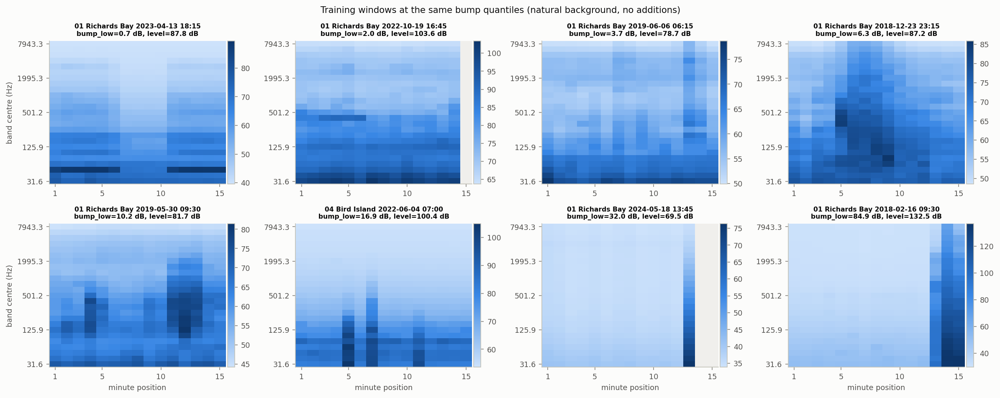
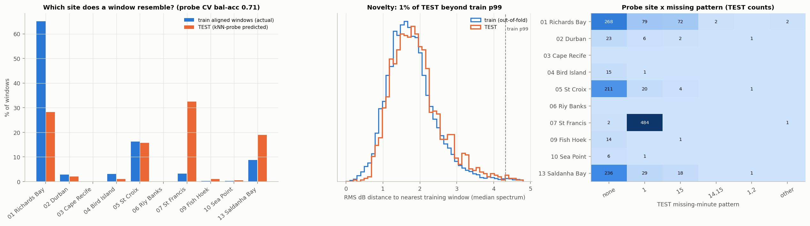
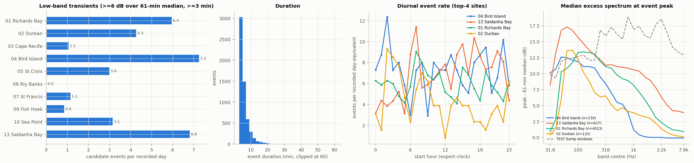
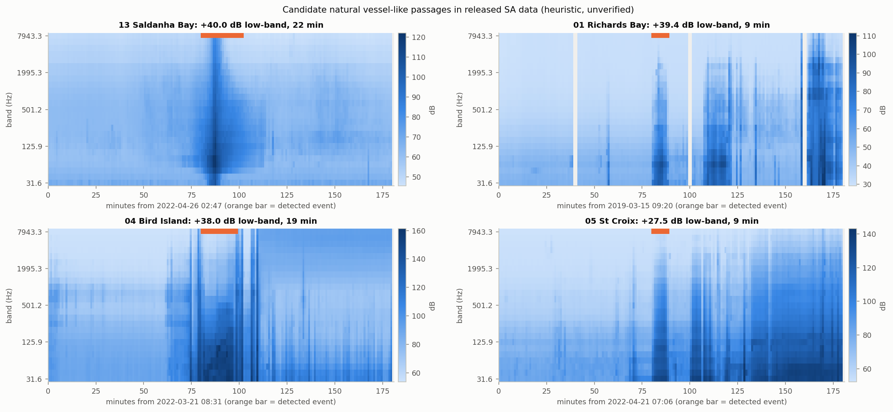
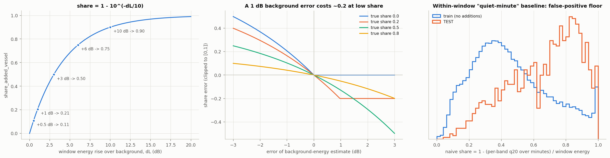
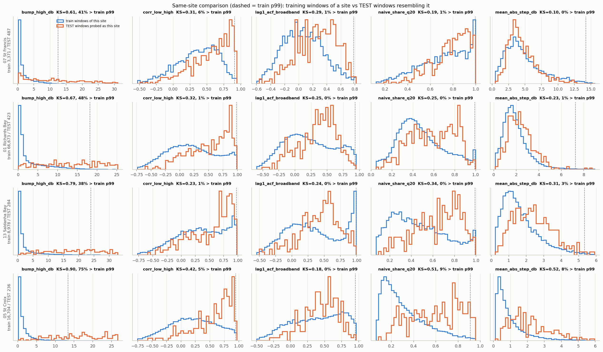
R2 학습 결과 · 구버전
아래는 이전 R2 데이터·모델로 완료한 실측 결과입니다. 새 R4 데이터의 성능으로 읽으면 안 됩니다. CNN OOF RMSE 0.238545, 당시 앙상블 0.245585이며 공식 제출 점수는 아닙니다.
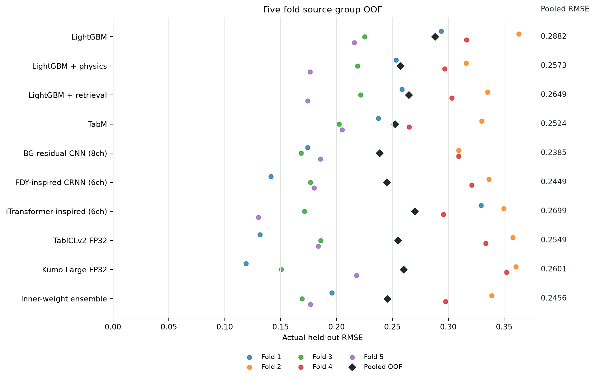
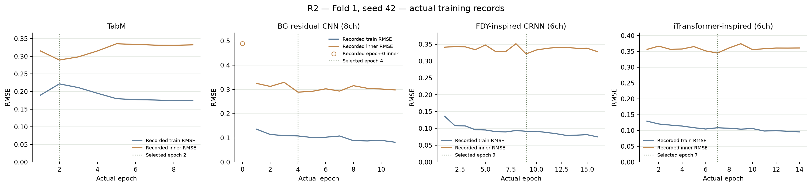
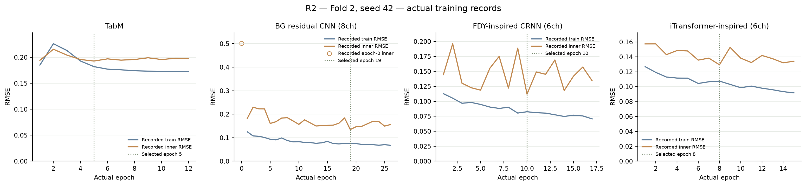
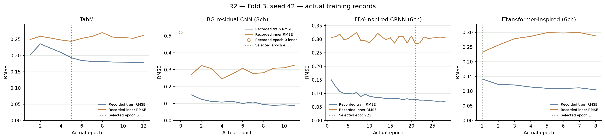
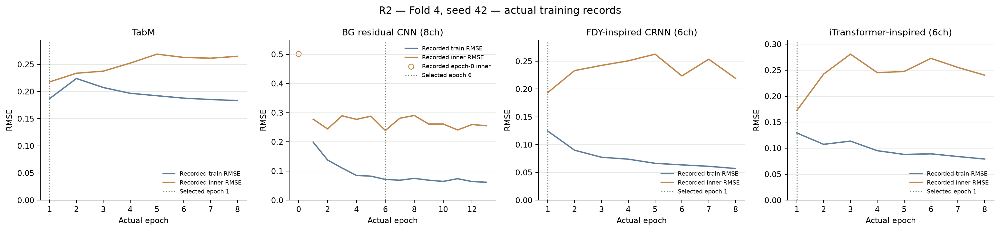
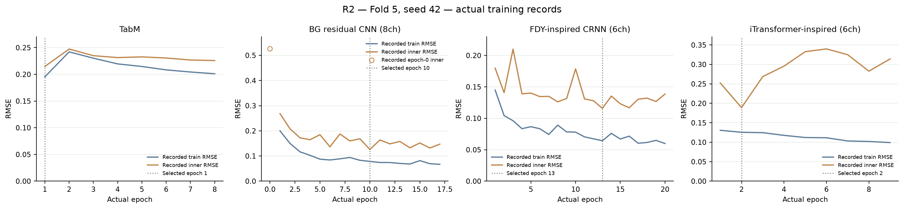
EDA 표 미리보기
eda/tables/checksum_verification.csv
| file | expected | actual | match |
|---|---|---|---|
| DATA_DICTIONARY.md | 162088ac6ff6565034e31ce60f244a41d1e584fec9f71850c2c722059c4fbe04 | 162088ac6ff6565034e31ce60f244a41d1e584fec9f71850c2c722059c4fbe04 | True |
| README.md | bd00be769c484a667acc144f2082ca08d86cd02a06b4191f41e53f185fd553dc | bd00be769c484a667acc144f2082ca08d86cd02a06b4191f41e53f185fd553dc | True |
| acoustics/01_Richards_Bay.parquet | c6bc7821a48e9327f8ac7d0d9097a46e6335d53d56d0c4d24ca2d7a542360590 | c6bc7821a48e9327f8ac7d0d9097a46e6335d53d56d0c4d24ca2d7a542360590 | True |
| acoustics/02_Durban.parquet | a152acad97f66886a3ce48aa5cbfb3747faa8c070a34815131b91632f63c7119 | a152acad97f66886a3ce48aa5cbfb3747faa8c070a34815131b91632f63c7119 | True |
| acoustics/03_Cape_Recife.parquet | 19cc712eccc3de70539314b712fab8215a0fbb146817fd26789b1eaabd81ef11 | 19cc712eccc3de70539314b712fab8215a0fbb146817fd26789b1eaabd81ef11 | True |
| acoustics/04_Bird_Island.parquet | ea0fb845751e0b144d11f0128fff8f4a037b097fa2416998cc95610b7b4b86d9 | ea0fb845751e0b144d11f0128fff8f4a037b097fa2416998cc95610b7b4b86d9 | True |
| acoustics/05_St_Croix_Island.parquet | 35d395df4f8d05da797d85ca51585fe0fcb97503976a77a1264424962d1723b2 | 35d395df4f8d05da797d85ca51585fe0fcb97503976a77a1264424962d1723b2 | True |
| acoustics/06_Riy_Banks.parquet | 455633242957f6dcbda0f0221fb07c17e60721b7777955706a1b04c965cc087c | 455633242957f6dcbda0f0221fb07c17e60721b7777955706a1b04c965cc087c | True |
앞 8개 데이터 행·최대 14열 미리보기. 전체 내용은 CSV에 있습니다.
eda/tables/column_missingness.csv
| site | column | rows | nulls | null_fraction | dtype | infinite |
|---|---|---|---|---|---|---|
| 1 Richards Bay | site | 1001174 | 0 | 0.0 | object | 0 |
| 1 Richards Bay | recorder | 1001174 | 0 | 0.0 | object | 0 |
| 1 Richards Bay | station_token | 1001174 | 0 | 0.0 | object | 0 |
| 1 Richards Bay | sample_rate_hz | 1001174 | 0 | 0.0 | int32 | 0 |
| 1 Richards Bay | file_kind | 1001174 | 0 | 0.0 | object | 0 |
| 1 Richards Bay | src_file | 1001174 | 0 | 0.0 | object | 0 |
| 1 Richards Bay | file_date | 1001174 | 0 | 0.0 | object | 0 |
| 1 Richards Bay | t | 1001174 | 0 | 0.0 | datetime64[ms] | 0 |
앞 8개 데이터 행·최대 14열 미리보기. 전체 내용은 CSV에 있습니다.
eda/tables/common_band_global_stats.csv
| dataset | band | frequency_hz | min | p01 | p10 | p50 | p90 | p99 | max |
|---|---|---|---|---|---|---|---|---|---|
| training_all | TOL_31.6 | 31.6 | -156.5 | 49.29999923706055 | 68.80000305175781 | 85.5999984741211 | 103.9000015258789 | 125.69999694824219 | 174.1999969482422 |
| training_all | TOL_39.8 | 39.8 | -156.5 | 48.400001525878906 | 66.30000305175781 | 84.19999694824219 | 102.19999694824219 | 121.0 | 168.60000610351562 |
| training_all | TOL_50.1 | 50.1 | -156.5 | 48.099998474121094 | 64.80000305175781 | 82.9000015258789 | 101.19999694824219 | 117.0 | 163.10000610351562 |
| training_all | TOL_63.1 | 63.1 | -156.5 | 46.099998474121094 | 63.20000076293945 | 81.5999984741211 | 100.4000015258789 | 116.80000305175781 | 162.6999969482422 |
| training_all | TOL_79.4 | 79.4 | -156.5 | 44.400001525878906 | 62.900001525878906 | 80.9000015258789 | 97.9000015258789 | 115.0999984741211 | 163.10000610351562 |
| training_all | TOL_100 | 100.0 | -156.5 | 43.0 | 62.900001525878906 | 80.9000015258789 | 96.80000305175781 | 111.5 | 162.3000030517578 |
| training_all | TOL_125.9 | 125.9 | -156.5 | 40.599998474121094 | 62.5 | 80.5 | 96.30000305175781 | 110.0 | 153.5 |
| training_all | TOL_158.5 | 158.5 | -156.5 | 39.0 | 61.0 | 79.80000305175781 | 95.19999694824219 | 108.9000015258789 | 156.10000610351562 |
앞 8개 데이터 행·최대 14열 미리보기. 전체 내용은 CSV에 있습니다.
eda/tables/common_band_site_stats.csv
| site | band | frequency_hz | min | p01 | p10 | p50 | p90 | p99 | max |
|---|---|---|---|---|---|---|---|---|---|
| 1 Richards Bay | TOL_31.6 | 31.6 | -156.5 | 41.900001525878906 | 66.5999984741211 | 86.5999984741211 | 103.5999984741211 | 126.69999694824219 | 154.39999389648438 |
| 1 Richards Bay | TOL_39.8 | 39.8 | -156.5 | 40.79999923706055 | 63.70000076293945 | 83.80000305175781 | 101.19999694824219 | 123.4000015258789 | 154.6999969482422 |
| 1 Richards Bay | TOL_50.1 | 50.1 | -156.5 | 39.900001525878906 | 62.70000076293945 | 82.30000305175781 | 100.19999694824219 | 120.4000015258789 | 154.39999389648438 |
| 1 Richards Bay | TOL_63.1 | 63.1 | -156.5 | 39.29999923706055 | 60.20000076293945 | 80.80000305175781 | 100.0 | 118.9000015258789 | 153.10000610351562 |
| 1 Richards Bay | TOL_79.4 | 79.4 | -156.5 | 38.5 | 60.400001525878906 | 80.0 | 95.80000305175781 | 116.0 | 144.3000030517578 |
| 1 Richards Bay | TOL_100 | 100.0 | -156.5 | 37.79999923706055 | 59.400001525878906 | 79.5 | 94.30000305175781 | 112.30000305175781 | 141.60000610351562 |
| 1 Richards Bay | TOL_125.9 | 125.9 | -156.5 | 37.099998474121094 | 58.5 | 78.5999984741211 | 94.5 | 110.80000305175781 | 138.39999389648438 |
| 1 Richards Bay | TOL_158.5 | 158.5 | -156.5 | 36.29999923706055 | 56.70000076293945 | 77.80000305175781 | 92.5999984741211 | 108.30000305175781 | 136.5 |
앞 8개 데이터 행·최대 14열 미리보기. 전체 내용은 CSV에 있습니다.
eda/tables/daily_coverage.csv
| site | date | rows |
|---|---|---|
| 1 Richards Bay | 2017-05-09 | 1440 |
| 1 Richards Bay | 2017-05-10 | 1440 |
| 1 Richards Bay | 2017-05-11 | 1440 |
| 1 Richards Bay | 2017-05-12 | 1440 |
| 1 Richards Bay | 2017-05-13 | 1440 |
| 1 Richards Bay | 2017-05-14 | 1440 |
| 1 Richards Bay | 2017-05-15 | 1440 |
| 1 Richards Bay | 2017-05-16 | 1440 |
앞 8개 데이터 행·최대 14열 미리보기. 전체 내용은 CSV에 있습니다.
eda/tables/duration_counts.csv
| site | dur | rows |
|---|---|---|
| 1 Richards Bay | 1.0 | 66 |
| 1 Richards Bay | 2.0 | 10566 |
| 1 Richards Bay | 3.0 | 64 |
| 1 Richards Bay | 4.0 | 107 |
| 1 Richards Bay | 5.0 | 472 |
| 1 Richards Bay | 6.0 | 9 |
| 1 Richards Bay | 7.0 | 185 |
| 1 Richards Bay | 8.0 | 42 |
앞 8개 데이터 행·최대 14열 미리보기. 전체 내용은 CSV에 있습니다.
eda/tables/file_inventory.csv
| file | bytes | MB_decimal | MiB | sha256 |
|---|---|---|---|---|
| data/raw/South_African_Real_Acoustics.zip | 94916719 | 94.916719 | 90.51963710784912 | 74b99f4c2a72c4cc822f1e466abd841ca3ff77867aa929b02380033aeedabc88 |
| data/raw/Test.csv | 2829614 | 2.829614 | 2.6985301971435547 | 3ef819192c05c4308b66564e6307e6f4f26fe806afe96ec93e2d15f25a3474d4 |
| data/raw/maritime_starter_notebook.ipynb | 10782 | 0.010782 | 0.010282516479492188 | 08242f4771c38de43ab9022d460b537b5eaa90a687bb1ddb532061b512dd6b83 |
| data/raw/sample_submission.csv | 49541 | 0.049541 | 0.04724597930908203 | b9ca88ef9249e34572a564adc87025c4186a59bb7b4836a53f09c4208e36693a |
| data/extracted/DATA_DICTIONARY.md | 2014 | 0.002014 | 0.0019207000732421875 | 162088ac6ff6565034e31ce60f244a41d1e584fec9f71850c2c722059c4fbe04 |
| data/extracted/README.md | 2423 | 0.002423 | 0.0023107528686523438 | bd00be769c484a667acc144f2082ca08d86cd02a06b4191f41e53f185fd553dc |
| data/extracted/SHA256SUMS.txt | 1304 | 0.001304 | 0.00124359130859375 | 8e863a87e85e78f42d6a13b77d8a5b8ebc21700e2e81336af2a15e73ec9f22f0 |
| data/extracted/acoustics/01_Richards_Bay.parquet | 56638580 | 56.63858 | 54.0147590637207 | c6bc7821a48e9327f8ac7d0d9097a46e6335d53d56d0c4d24ca2d7a542360590 |
앞 8개 데이터 행·최대 14열 미리보기. 전체 내용은 CSV에 있습니다.
eda/tables/flat_and_sentinel_rows.csv
| site | recorder | src_file | t | dur | TOL_31.6 | TOL_39.8 | TOL_50.1 | TOL_63.1 | TOL_79.4 | TOL_100 | TOL_125.9 | TOL_158.5 | TOL_199.5 |
|---|---|---|---|---|---|---|---|---|---|---|---|---|---|
| 1 Richards Bay | 5708_Richards_Bay_5708.1.24000 | 5708_Richards_Bay_5708.1.24000_20210810_DAILY_DECIIDEC_MinRes_ERROR_.csv | 2021-08-10 05:32:52 | 8.0 | -156.5 | -156.5 | -156.5 | -156.5 | -156.5 | -156.5 | -156.5 | -156.5 | -156.5 |
| 1 Richards Bay | 5708_Richards_Bay_5708.1.24000 | 5708_Richards_Bay_5708.1.24000_20210810_DAILY_DECIIDEC_MinRes_ERROR_.csv | 2021-08-10 05:33:00 | 60.0 | -156.5 | -156.5 | -156.5 | -156.5 | -156.5 | -156.5 | -156.5 | -156.5 | -156.5 |
| 1 Richards Bay | 5708_Richards_Bay_5708.1.24000 | 5708_Richards_Bay_5708.1.24000_20210810_DAILY_DECIIDEC_MinRes_ERROR_.csv | 2021-08-10 05:34:00 | 60.0 | -156.5 | -156.5 | -156.5 | -156.5 | -156.5 | -156.5 | -156.5 | -156.5 | -156.5 |
| 1 Richards Bay | 5708_Richards_Bay_5708.1.24000 | 5708_Richards_Bay_5708.1.24000_20210810_DAILY_DECIIDEC_MinRes_ERROR_.csv | 2021-08-10 05:35:00 | 47.0 | -156.5 | -156.5 | -156.5 | -156.5 | -156.5 | -156.5 | -156.5 | -156.5 | -156.5 |
| 1 Richards Bay | 5708_Richards_Bay_5708.1.24000 | 5708_Richards_Bay_5708.1.24000_20210810_DAILY_DECIIDEC_MinRes_ERROR_.csv | 2021-08-10 05:36:00 | 60.0 | -156.5 | -156.5 | -156.5 | -156.5 | -156.5 | -156.5 | -156.5 | -156.5 | -156.5 |
| 1 Richards Bay | 5708_Richards_Bay_5708.1.24000 | 5708_Richards_Bay_5708.1.24000_20210810_DAILY_DECIIDEC_MinRes_ERROR_.csv | 2021-08-10 05:37:00 | 60.0 | -156.5 | -156.5 | -156.5 | -156.5 | -156.5 | -156.5 | -156.5 | -156.5 | -156.5 |
| 1 Richards Bay | 5708_Richards_Bay_5708.1.24000 | 5708_Richards_Bay_5708.1.24000_20210810_DAILY_DECIIDEC_MinRes_ERROR_.csv | 2021-08-10 07:50:07 | 53.0 | -156.5 | -156.5 | -156.5 | -156.5 | -156.5 | -156.5 | -156.5 | -156.5 | -156.5 |
| 1 Richards Bay | 5708_Richards_Bay_5708.1.24000 | 5708_Richards_Bay_5708.1.24000_20210810_DAILY_DECIIDEC_MinRes_ERROR_.csv | 2021-08-10 07:51:00 | 60.0 | -156.5 | -156.5 | -156.5 | -156.5 | -156.5 | -156.5 | -156.5 | -156.5 | -156.5 |
앞 8개 데이터 행·최대 14열 미리보기. 전체 내용은 CSV에 있습니다.
eda/tables/recorder_band_missingness.csv
| site | recorder | band | frequency_hz | rows | missing | missing_fraction | all_missing | intermittent_missing |
|---|---|---|---|---|---|---|---|---|
| 1 Richards Bay | 201383949_Richards_Bay_201383949.1.24000 | TOL_0.8 | 0.8 | 492310 | 0 | 0.0 | False | False |
| 1 Richards Bay | 201383949_Richards_Bay_201383949.1.24000 | TOL_1 | 1.0 | 492310 | 0 | 0.0 | False | False |
| 1 Richards Bay | 201383949_Richards_Bay_201383949.1.24000 | TOL_1.3 | 1.3 | 492310 | 0 | 0.0 | False | False |
| 1 Richards Bay | 201383949_Richards_Bay_201383949.1.24000 | TOL_1.6 | 1.6 | 492310 | 0 | 0.0 | False | False |
| 1 Richards Bay | 201383949_Richards_Bay_201383949.1.24000 | TOL_2 | 2.0 | 492310 | 0 | 0.0 | False | False |
| 1 Richards Bay | 201383949_Richards_Bay_201383949.1.24000 | TOL_2.5 | 2.5 | 492310 | 0 | 0.0 | False | False |
| 1 Richards Bay | 201383949_Richards_Bay_201383949.1.24000 | TOL_3.2 | 3.2 | 492310 | 0 | 0.0 | False | False |
| 1 Richards Bay | 201383949_Richards_Bay_201383949.1.24000 | TOL_4 | 4.0 | 492310 | 0 | 0.0 | False | False |
앞 8개 데이터 행·최대 14열 미리보기. 전체 내용은 CSV에 있습니다.
eda/tables/recorder_summary.csv
| site | recorder | rows | source_files | nominal_sample_rate_hz | first_t | last_t | diff_eq60 | diff_lt60 | diff_gt60 | diff_gt3600 | max_gap_seconds | duplicate_t | off_minute_rows |
|---|---|---|---|---|---|---|---|---|---|---|---|---|---|
| 1 Richards Bay | 201383949_Richards_Bay_201383949.1.24000 | 492310 | 376 | 24000 | 2017-05-09 00:00:02 | 2019-10-05 16:06:00 | 480468 | 5899 | 5942 | 110 | 4683662.0 | 0 | 5901 |
| 1 Richards Bay | 5708_Richards_Bay_5708.1.24000 | 160798 | 125 | 24000 | 2020-10-02 00:00:00 | 2021-11-28 01:48:00 | 156363 | 1837 | 2597 | 49 | 7390502.0 | 0 | 1833 |
| 1 Richards Bay | 7005_Richards_Bay_7005.1.24000 | 348066 | 251 | 24000 | 2022-10-04 00:00:00 | 2024-05-25 23:59:00 | 336467 | 5788 | 5810 | 22 | 7009258.0 | 0 | 5797 |
| 2 Durban | 8230_ST600_8230.1.48000 | 44640 | 31 | 48000 | 2025-10-28 00:00:00 | 2025-12-06 23:59:00 | 44632 | 3 | 4 | 1 | 777660.0 | 0 | 3 |
| 3 Cape_Recife | 8210_ST600_8210.1.48000 | 5928 | 19 | 48000 | 2024-03-05 00:00:00 | 2024-03-23 23:12:00 | 5472 | 0 | 455 | 0 | 2880.0 | 0 | 0 |
| 4 Bird Island | URN.BirdIsland.2022_6509.1.24000 | 46472 | 65 | 24000 | 2022-03-21 05:59:58 | 2022-09-06 05:59:00 | 46405 | 32 | 34 | 34 | 2764858.0 | 0 | 32 |
| 4 Bird Island | URN_8321_8321.1.12000 | 1080 | 1 | 12000 | 2024-06-29 06:00:00 | 2024-06-29 23:59:00 | 1079 | 0 | 0 | 0 | 60.0 | 0 | 0 |
| 5 St Croix Island | URN.BirdIsland.2022_6509.1.24000 | 45163 | 62 | 24000 | 2023-05-03 05:59:58 | 2024-07-28 20:09:00 | 45097 | 32 | 33 | 33 | 26092798.0 | 0 | 32 |
앞 8개 데이터 행·최대 14열 미리보기. 전체 내용은 CSV에 있습니다.
eda/tables/schema.csv
| site | column | dtype | nullable |
|---|---|---|---|
| 1 Richards Bay | site | string | True |
| 1 Richards Bay | recorder | string | True |
| 1 Richards Bay | station_token | string | True |
| 1 Richards Bay | sample_rate_hz | int32 | True |
| 1 Richards Bay | file_kind | string | True |
| 1 Richards Bay | src_file | string | True |
| 1 Richards Bay | file_date | string | True |
| 1 Richards Bay | t | timestamp[ms] | True |
앞 8개 데이터 행·최대 14열 미리보기. 전체 내용은 CSV에 있습니다.
eda/tables/site_summary.csv
| site | rows | columns | tol_columns | recorders | source_files | first_t | last_t | duplicate_site_t | missing_t | tol_missing_cells | tol_total_cells | common_missing_cells | common_cells |
|---|---|---|---|---|---|---|---|---|---|---|---|---|---|
| 1 Richards Bay | 1001174 | 74 | 62 | 3 | 752 | 2017-05-09 00:00:02 | 2024-05-25 23:59:00 | 0 | 0 | 14635610 | 62072788 | 0 | 25029350 |
| 2 Durban | 44640 | 74 | 62 | 1 | 31 | 2025-10-28 00:00:00 | 2025-12-06 23:59:00 | 0 | 0 | 848160 | 2767680 | 0 | 1116000 |
| 3 Cape_Recife | 5928 | 74 | 62 | 1 | 19 | 2024-03-05 00:00:00 | 2024-03-23 23:12:00 | 0 | 0 | 94848 | 367536 | 0 | 148200 |
| 4 Bird Island | 47552 | 74 | 62 | 2 | 66 | 2022-03-21 05:59:58 | 2024-06-29 23:59:00 | 0 | 0 | 905648 | 2948224 | 0 | 1188800 |
| 5 St Croix Island | 250717 | 74 | 62 | 3 | 291 | 2022-04-05 00:00:00 | 2025-09-20 06:00:00 | 0 | 0 | 4931937 | 15544454 | 0 | 6267925 |
| 6 Riy_Banks | 4121 | 74 | 62 | 1 | 14 | 2024-03-05 00:00:00 | 2024-04-05 23:12:00 | 0 | 0 | 65936 | 255502 | 0 | 103025 |
| 7 St_Francis | 169488 | 74 | 62 | 1 | 476 | 2015-04-21 00:00:00 | 2018-02-28 14:24:00 | 0 | 0 | 2711808 | 10508256 | 0 | 4237200 |
| 9 Fish Hoek | 53767 | 74 | 62 | 2 | 74 | 2016-09-13 00:00:02 | 2021-09-28 12:45:00 | 0 | 0 | 712492 | 3333554 | 0 | 1344175 |
앞 8개 데이터 행·최대 14열 미리보기. 전체 내용은 CSV에 있습니다.
eda/tables/test_minute_band_missingness.csv
| minute | band | frequency_hz | missing_windows | missing_fraction |
|---|---|---|---|---|
| 1 | TOL_31.6 | 31.6 | 624 | 0.416 |
| 1 | TOL_39.8 | 39.8 | 624 | 0.416 |
| 1 | TOL_50.1 | 50.1 | 624 | 0.416 |
| 1 | TOL_63.1 | 63.1 | 624 | 0.416 |
| 1 | TOL_79.4 | 79.4 | 624 | 0.416 |
| 1 | TOL_100 | 100.0 | 624 | 0.416 |
| 1 | TOL_125.9 | 125.9 | 624 | 0.416 |
| 1 | TOL_158.5 | 158.5 | 624 | 0.416 |
앞 8개 데이터 행·최대 14열 미리보기. 전체 내용은 CSV에 있습니다.
eda/tables/test_missing_patterns.csv
| missing_minute_positions | windows |
|---|---|
| none | 775 |
| 15 | 97 |
| 14,15 | 2 |
| 13,14 | 1 |
| 8,9 | 1 |
| 1 | 620 |
| 1,14,15 | 1 |
| 1,2 | 3 |
앞 8개 데이터 행·최대 14열 미리보기. 전체 내용은 CSV에 있습니다.
eda/tables/test_window_quality.csv
| ID | missing_cells | missing_minutes | partial_missing_minutes | observed_minutes | min_db | max_db |
|---|---|---|---|---|---|---|
| 2faff3d55b60e5d43164e077 | 0 | 0 | 0 | 15 | 66.7 | 96.9 |
| d1ec49eeb0e521c24ad12436 | 0 | 0 | 0 | 15 | 49.0 | 92.6 |
| de84f7d729af066d86c1d04c | 25 | 1 | 0 | 14 | 65.4 | 100.9 |
| a40c70208d9d9acd1d9e7beb | 0 | 0 | 0 | 15 | 49.9 | 88.4 |
| f4040fd0d09fb75227c86d65 | 0 | 0 | 0 | 15 | 49.2 | 85.1 |
| b55cbab8a75824bb18e72be5 | 25 | 1 | 0 | 14 | 60.9 | 92.8 |
| a6a9e5e3dbde83c2d5cd2eda | 0 | 0 | 0 | 15 | 42.3 | 78.6 |
| 65229e3ad716aa1b6767d9ac | 0 | 0 | 0 | 15 | 46.3 | 76.5 |
앞 8개 데이터 행·최대 14열 미리보기. 전체 내용은 CSV에 있습니다.
eda_deep/tables/band_correlation.csv
| index | TOL_31.6 | TOL_39.8 | TOL_50.1 | TOL_63.1 | TOL_79.4 | TOL_100 | TOL_125.9 | TOL_158.5 | TOL_199.5 | TOL_251.2 | TOL_316.2 | TOL_398.1 | TOL_501.2 |
|---|---|---|---|---|---|---|---|---|---|---|---|---|---|
| TOL_31.6 | 1.0 | 0.966 | 0.869 | 0.836 | 0.804 | 0.773 | 0.73 | 0.682 | 0.648 | 0.61 | 0.58 | 0.58 | 0.585 |
| TOL_39.8 | 0.966 | 1.0 | 0.925 | 0.883 | 0.848 | 0.81 | 0.763 | 0.709 | 0.67 | 0.631 | 0.601 | 0.592 | 0.596 |
| TOL_50.1 | 0.869 | 0.925 | 1.0 | 0.926 | 0.877 | 0.825 | 0.773 | 0.722 | 0.668 | 0.632 | 0.599 | 0.574 | 0.577 |
| TOL_63.1 | 0.836 | 0.883 | 0.926 | 1.0 | 0.946 | 0.889 | 0.843 | 0.784 | 0.746 | 0.709 | 0.672 | 0.661 | 0.661 |
| TOL_79.4 | 0.804 | 0.848 | 0.877 | 0.946 | 1.0 | 0.942 | 0.893 | 0.839 | 0.797 | 0.756 | 0.717 | 0.703 | 0.7 |
| TOL_100 | 0.773 | 0.81 | 0.825 | 0.889 | 0.942 | 1.0 | 0.957 | 0.903 | 0.871 | 0.825 | 0.783 | 0.776 | 0.77 |
| TOL_125.9 | 0.73 | 0.763 | 0.773 | 0.843 | 0.893 | 0.957 | 1.0 | 0.947 | 0.914 | 0.877 | 0.836 | 0.827 | 0.812 |
| TOL_158.5 | 0.682 | 0.709 | 0.722 | 0.784 | 0.839 | 0.903 | 0.947 | 1.0 | 0.961 | 0.92 | 0.892 | 0.872 | 0.857 |
앞 8개 데이터 행·최대 14열 미리보기. 전체 내용은 CSV에 있습니다.
eda_deep/tables/band_energy_share.csv
| set | TOL_31.6 | TOL_39.8 | TOL_50.1 | TOL_63.1 | TOL_79.4 | TOL_100 | TOL_125.9 | TOL_158.5 | TOL_199.5 | TOL_251.2 | TOL_316.2 | TOL_398.1 | TOL_501.2 |
|---|---|---|---|---|---|---|---|---|---|---|---|---|---|
| 01 Richards Bay | 0.2818 | 0.1459 | 0.1137 | 0.08 | 0.0539 | 0.0456 | 0.0486 | 0.0387 | 0.0304 | 0.0318 | 0.036 | 0.0246 | 0.0167 |
| 02 Durban | 0.3192 | 0.1927 | 0.0672 | 0.0513 | 0.0454 | 0.0416 | 0.0467 | 0.0415 | 0.0435 | 0.0437 | 0.0367 | 0.0186 | 0.0141 |
| 03 Cape Recife | 0.3927 | 0.2555 | 0.0914 | 0.0332 | 0.0121 | 0.0069 | 0.0061 | 0.0155 | 0.0085 | 0.01 | 0.0191 | 0.0096 | 0.0104 |
| 04 Bird Island | 0.3475 | 0.1887 | 0.0644 | 0.042 | 0.0609 | 0.0369 | 0.0246 | 0.0162 | 0.0103 | 0.0091 | 0.0114 | 0.0078 | 0.0037 |
| 05 St Croix | 0.1214 | 0.1268 | 0.1284 | 0.1002 | 0.0732 | 0.0803 | 0.0663 | 0.0563 | 0.0512 | 0.0456 | 0.0455 | 0.0354 | 0.026 |
| 06 Riy Banks | 0.0778 | 0.0906 | 0.0551 | 0.0291 | 0.0208 | 0.0191 | 0.0223 | 0.0267 | 0.0107 | 0.0191 | 0.0225 | 0.0113 | 0.0178 |
| 07 St Francis | 0.1184 | 0.0654 | 0.0418 | 0.0309 | 0.0267 | 0.0322 | 0.0337 | 0.0431 | 0.0437 | 0.0692 | 0.0972 | 0.0657 | 0.0424 |
| 09 Fish Hoek | 0.109 | 0.0724 | 0.0699 | 0.0688 | 0.1067 | 0.1087 | 0.0894 | 0.0696 | 0.0523 | 0.0413 | 0.0341 | 0.0322 | 0.0192 |
앞 8개 데이터 행·최대 14열 미리보기. 전체 내용은 CSV에 있습니다.
eda_deep/tables/band_transient_profiles.csv
| band | train_peak_excess_med | test_peak_excess_med | train_range_med | test_range_med | train_range_p90 | test_range_p90 |
|---|---|---|---|---|---|---|
| TOL_31.6 | 12.0 | 9.9 | 7.1 | 10.3 | 16.1 | 22.21 |
| TOL_39.8 | 12.7 | 9.3 | 7.2 | 10.3 | 16.4 | 21.71 |
| TOL_50.1 | 13.4 | 11.9 | 7.3 | 11.0 | 17.2 | 22.9 |
| TOL_63.1 | 13.4 | 12.3 | 7.0 | 11.2 | 17.7 | 23.91 |
| TOL_79.4 | 13.1 | 12.4 | 6.7 | 11.6 | 17.6 | 24.11 |
| TOL_100 | 13.1 | 12.7 | 6.9 | 12.8 | 17.8 | 24.5 |
| TOL_125.9 | 12.8 | 12.9 | 7.4 | 12.7 | 17.8 | 24.81 |
| TOL_158.5 | 12.8 | 12.1 | 7.7 | 13.15 | 18.5 | 24.41 |
앞 8개 데이터 행·최대 14열 미리보기. 전체 내용은 CSV에 있습니다.
eda_deep/tables/broadband_acf.csv
| site | recorder | lag_min | pairs | acf |
|---|---|---|---|---|
| 01 Richards Bay | 201383949_Richards_Bay_201383949.1.24000 | 1 | 474518 | 0.9523458755725244 |
| 01 Richards Bay | 201383949_Richards_Bay_201383949.1.24000 | 2 | 468585 | 0.9357020095160437 |
| 01 Richards Bay | 201383949_Richards_Bay_201383949.1.24000 | 3 | 468449 | 0.9216104086525462 |
| 01 Richards Bay | 201383949_Richards_Bay_201383949.1.24000 | 5 | 468232 | 0.8957883029728335 |
| 01 Richards Bay | 201383949_Richards_Bay_201383949.1.24000 | 10 | 467707 | 0.8658089491068836 |
| 01 Richards Bay | 201383949_Richards_Bay_201383949.1.24000 | 15 | 467182 | 0.8397255594821833 |
| 01 Richards Bay | 201383949_Richards_Bay_201383949.1.24000 | 20 | 466655 | 0.8246636109455423 |
| 01 Richards Bay | 201383949_Richards_Bay_201383949.1.24000 | 30 | 465611 | 0.8019172803055071 |
앞 8개 데이터 행·최대 14열 미리보기. 전체 내용은 CSV에 있습니다.
eda_deep/tables/diurnal_band_deviation.csv
| site | band | hour | median_dev_db |
|---|---|---|---|
| 01 Richards Bay | 63 Hz | 0 | -0.5 |
| 01 Richards Bay | 63 Hz | 1 | -0.7 |
| 01 Richards Bay | 63 Hz | 2 | -0.8 |
| 01 Richards Bay | 63 Hz | 3 | -0.9 |
| 01 Richards Bay | 63 Hz | 4 | -1.0 |
| 01 Richards Bay | 63 Hz | 5 | -1.1 |
| 01 Richards Bay | 63 Hz | 6 | -0.5 |
| 01 Richards Bay | 63 Hz | 7 | 0.0 |
앞 8개 데이터 행·최대 14열 미리보기. 전체 내용은 CSV에 있습니다.
eda_deep/tables/domain_probe_cv_confusion.csv
| true_site | 01 Richards Bay | 02 Durban | 03 Cape Recife | 04 Bird Island | 05 St Croix | 06 Riy Banks | 07 St Francis | 09 Fish Hoek | 10 Sea Point | 13 Saldanha Bay |
|---|---|---|---|---|---|---|---|---|---|---|
| 01 Richards Bay | 3184 | 79 | 0 | 16 | 285 | 0 | 2 | 0 | 11 | 423 |
| 02 Durban | 207 | 2479 | 0 | 4 | 149 | 0 | 1 | 6 | 0 | 130 |
| 03 Cape Recife | 0 | 0 | 0 | 0 | 0 | 0 | 0 | 0 | 0 | 0 |
| 04 Bird Island | 51 | 17 | 0 | 2990 | 29 | 0 | 29 | 0 | 8 | 44 |
| 05 St Croix | 168 | 136 | 0 | 2 | 3486 | 0 | 10 | 3 | 0 | 195 |
| 06 Riy Banks | 0 | 0 | 0 | 0 | 0 | 0 | 0 | 0 | 0 | 0 |
| 07 St Francis | 5 | 0 | 0 | 6 | 26 | 0 | 3334 | 0 | 0 | 0 |
| 09 Fish Hoek | 11 | 187 | 0 | 0 | 10 | 0 | 0 | 87 | 3 | 2 |
앞 8개 데이터 행·최대 14열 미리보기. 전체 내용은 CSV에 있습니다.
eda_deep/tables/domain_probe_vs_missing_pattern.csv
| probe_site | none | 1 | 15 | 14,15 | 1,2 | other |
|---|---|---|---|---|---|---|
| 01 Richards Bay | 268 | 79 | 72 | 2 | 0 | 2 |
| 02 Durban | 23 | 6 | 2 | 0 | 1 | 0 |
| 03 Cape Recife | 0 | 0 | 0 | 0 | 0 | 0 |
| 04 Bird Island | 15 | 1 | 0 | 0 | 0 | 0 |
| 05 St Croix | 211 | 20 | 4 | 0 | 1 | 0 |
| 06 Riy Banks | 0 | 0 | 0 | 0 | 0 | 0 |
| 07 St Francis | 2 | 484 | 0 | 0 | 0 | 1 |
| 09 Fish Hoek | 14 | 0 | 1 | 0 | 0 | 0 |
앞 8개 데이터 행·최대 14열 미리보기. 전체 내용은 CSV에 있습니다.
eda_deep/tables/missing_pattern_by_recorder.csv
| set | none | 1 | 15 | 14,15 | 1,2 | other |
|---|---|---|---|---|---|---|
| 01 Richards Bay | 201383949_Richards_B (24k) | 0.8199 | 0.163 | 0.0009 | 0.0 | 0.0 | 0.0162 |
| 01 Richards Bay | 5708_Richards_Bay_57 (24k) | 0.7652 | 0.0464 | 0.0713 | 0.0006 | 0.0004 | 0.1162 |
| 01 Richards Bay | 7005_Richards_Bay_70 (24k) | 0.7501 | 0.0068 | 0.2247 | 0.0 | 0.0 | 0.0184 |
| 02 Durban | 8230_ST600_8230 (48k) | 0.999 | 0.0 | 0.0 | 0.0 | 0.0 | 0.001 |
| 03 Cape Recife | 8210_ST600_8210 (48k) | 0.0 | 0.0 | 0.0 | 1.0 | 0.0 | 0.0 |
| 04 Bird Island | URN.BirdIsland.2022_ (24k) | 1.0 | 0.0 | 0.0 | 0.0 | 0.0 | 0.0 |
| 04 Bird Island | URN_8321_8321 (12k) | 1.0 | 0.0 | 0.0 | 0.0 | 0.0 | 0.0 |
| 05 St Croix | URN.BirdIsland.2022_ (24k) | 0.998 | 0.002 | 0.0 | 0.0 | 0.0 | 0.0 |
앞 8개 데이터 행·최대 14열 미리보기. 전체 내용은 CSV에 있습니다.
eda_deep/tables/monthly_broadband_deviation.csv
| label | 1 | 2 | 3 | 4 | 5 | 6 | 7 | 8 | 9 | 10 | 11 | 12 |
|---|---|---|---|---|---|---|---|---|---|---|---|---|
| 01 Richards Bay | 0.48 | 0.15 | -0.64 | -1.43 | 1.82 | -1.87 | -0.12 | -0.96 | 0.64 | -0.24 | -0.01 | 2.45 |
| 02 Durban | 5.73 | -0.12 | -0.7 | |||||||||
| 03 Cape Recife | -0.0 | |||||||||||
| 04 Bird Island | 6.98 | 6.52 | 2.45 | -0.39 | -3.38 | 5.16 | ||||||
| 05 St Croix | -0.16 | -0.59 | -0.64 | -0.65 | 0.86 | 0.71 | ||||||
| 06 Riy Banks | ||||||||||||
| 07 St Francis | 5.5 | -0.36 | -3.75 | -4.05 | -3.4 | -0.79 | -0.06 | 2.76 | -2.25 | -0.88 | 1.06 | 5.01 |
| 09 Fish Hoek | 0.36 | 0.38 | 0.99 | 2.04 | -1.25 |
앞 8개 데이터 행·최대 14열 미리보기. 전체 내용은 CSV에 있습니다.
eda_deep/tables/natural_transient_events.csv
| site | recorder | start | duration_min | peak_excess_low_db | peak_excess_ref_db | hour |
|---|---|---|---|---|---|---|
| 01 Richards Bay | 201383949_Richards_Bay_201383949.1.24000 | 2017-05-09 01:07:00 | 4 | 18.127 | 11.074 | 1 |
| 01 Richards Bay | 201383949_Richards_Bay_201383949.1.24000 | 2017-05-09 01:12:00 | 5 | 13.211 | 8.443 | 1 |
| 01 Richards Bay | 201383949_Richards_Bay_201383949.1.24000 | 2017-05-09 11:43:00 | 11 | 21.675 | 11.845 | 11 |
| 01 Richards Bay | 201383949_Richards_Bay_201383949.1.24000 | 2017-05-09 15:45:00 | 8 | 19.125 | 2.502 | 15 |
| 01 Richards Bay | 201383949_Richards_Bay_201383949.1.24000 | 2017-05-10 17:46:00 | 5 | 10.741 | 1.068 | 17 |
| 01 Richards Bay | 201383949_Richards_Bay_201383949.1.24000 | 2017-05-10 18:21:00 | 5 | 14.058 | 0.036 | 18 |
| 01 Richards Bay | 201383949_Richards_Bay_201383949.1.24000 | 2017-05-10 23:42:00 | 3 | 18.464 | 13.305 | 23 |
| 01 Richards Bay | 201383949_Richards_Bay_201383949.1.24000 | 2017-05-10 23:46:00 | 5 | 12.716 | 9.302 | 23 |
앞 8개 데이터 행·최대 14열 미리보기. 전체 내용은 CSV에 있습니다.
eda_deep/tables/recorder_duty_cycle.csv
| site | recorder | nominal_sr_hz | rows | first_t | last_t | span_days | coverage_in_span | offgrid_rows | dur_lt55_rows | sentinel_rows | median_run_min | max_run_min | modal_run_min |
|---|---|---|---|---|---|---|---|---|---|---|---|---|---|
| 01 Richards Bay | 201383949_Richards_Bay_201383949.1.24000 | 24000 | 492310 | 2017-05-09 00:00:02 | 2019-10-05 16:06:00 | 879.7 | 0.379 | 5901 | 6401 | 0 | 58.0 | 9664 | 58 |
| 01 Richards Bay | 5708_Richards_Bay_5708.1.24000 | 24000 | 160798 | 2020-10-02 00:00:00 | 2021-11-28 01:48:00 | 422.1 | 0.26 | 1833 | 3058 | 654 | 59.0 | 158 | 59 |
| 01 Richards Bay | 7005_Richards_Bay_7005.1.24000 | 24000 | 348066 | 2022-10-04 00:00:00 | 2024-05-25 23:59:00 | 600.0 | 0.389 | 5797 | 6232 | 0 | 58.0 | 117 | 58 |
| 02 Durban | 8230_ST600_8230.1.48000 | 48000 | 44640 | 2025-10-28 00:00:00 | 2025-12-06 23:59:00 | 40.0 | 0.775 | 3 | 0 | 0 | 3236.0 | 33836 | 363 |
| 03 Cape Recife | 8210_ST600_8210.1.48000 | 48000 | 5928 | 2024-03-05 00:00:00 | 2024-03-23 23:12:00 | 19.0 | 0.2 | 0 | 0 | 0 | 12.0 | 12 | 12 |
| 04 Bird Island | URN.BirdIsland.2022_6509.1.24000 | 24000 | 46472 | 2022-03-21 05:59:58 | 2022-09-06 05:59:00 | 169.0 | 0.191 | 32 | 32 | 0 | 1439.0 | 1439 | 1439 |
| 04 Bird Island | URN_8321_8321.1.12000 | 12000 | 1080 | 2024-06-29 06:00:00 | 2024-06-29 23:59:00 | 0.8 | 1.0 | 0 | 0 | 0 | 1080.0 | 1080 | 1080 |
| 05 St Croix | URN.BirdIsland.2022_6509.1.24000 | 24000 | 45163 | 2023-05-03 05:59:58 | 2024-07-28 20:09:00 | 452.6 | 0.069 | 32 | 34 | 0 | 1439.0 | 1439 | 1439 |
앞 8개 데이터 행·최대 14열 미리보기. 전체 내용은 CSV에 있습니다.
eda_deep/tables/recorder_spectrum_quantiles.csv
| site | recorder | stat | TOL_31.6 | TOL_39.8 | TOL_50.1 | TOL_63.1 | TOL_79.4 | TOL_100 | TOL_125.9 | TOL_158.5 | TOL_199.5 | TOL_251.2 | TOL_316.2 |
|---|---|---|---|---|---|---|---|---|---|---|---|---|---|
| 01 Richards Bay | 201383949_Richards_Bay_201383949.1.24000 | p10 | 53.8 | 55.0 | 57.3 | 52.5 | 53.5 | 48.8 | 49.4 | 49.0 | 44.7 | 44.1 | 45.6 |
| 01 Richards Bay | 201383949_Richards_Bay_201383949.1.24000 | p50 | 74.7 | 71.9 | 69.8 | 67.8 | 66.7 | 66.8 | 66.7 | 65.5 | 63.8 | 63.2 | 62.9 |
| 01 Richards Bay | 201383949_Richards_Bay_201383949.1.24000 | p90 | 84.0 | 81.8 | 80.5 | 80.5 | 79.1 | 78.6 | 78.9 | 78.5 | 77.1 | 77.0 | 77.2 |
| 01 Richards Bay | 5708_Richards_Bay_5708.1.24000 | p10 | 85.1 | 81.7 | 79.6 | 76.4 | 76.2 | 76.1 | 74.0 | 73.0 | 71.9 | 70.5 | 70.1 |
| 01 Richards Bay | 5708_Richards_Bay_5708.1.24000 | p50 | 95.5 | 91.9 | 88.7 | 87.0 | 85.5 | 84.0 | 82.6 | 81.7 | 81.1 | 80.6 | 79.7 |
| 01 Richards Bay | 5708_Richards_Bay_5708.1.24000 | p90 | 110.5 | 107.0 | 107.3 | 106.0 | 98.9 | 94.6 | 92.6 | 90.1 | 89.8 | 89.8 | 89.2 |
| 01 Richards Bay | 7005_Richards_Bay_7005.1.24000 | p10 | 89.2 | 85.7 | 83.2 | 81.0 | 80.5 | 80.6 | 80.5 | 78.7 | 77.3 | 75.5 | 74.4 |
| 01 Richards Bay | 7005_Richards_Bay_7005.1.24000 | p50 | 96.3 | 93.5 | 91.1 | 89.1 | 87.7 | 87.4 | 88.4 | 87.2 | 85.8 | 84.6 | 84.7 |
앞 8개 데이터 행·최대 14열 미리보기. 전체 내용은 CSV에 있습니다.
eda_deep/tables/run_edge_artifacts.csv
| recorder | runs | median_first_minute_excess_db | median_last_minute_excess_db | masked_rows |
|---|---|---|---|---|
| 201383949_Richards_Bay_201383949.1.24000 | 5941 | 0.0 | 11.17 | 5941 |
| 5708_Richards_Bay_5708.1.24000 | 2592 | 1.39 | -0.4 | 0 |
| 7005_Richards_Bay_7005.1.24000 | 5802 | 23.98 | -0.01 | 5802 |
| 8210_ST600_8210.1.48000 | 456 | 28.69 | 0.0 | 456 |
| 8230_ST600_8230.1.48000 | 322 | 30.08 | -0.03 | 322 |
| SM2M_Cape_StFrancis_SM2M.1.48000 | 27154 | 0.0 | 0.0 | 0 |
| ST300_201650217_ST201650217.1.96000 | 9751 | 0.14 | 0.0 | 0 |
| ST300_5344_ST5344.1.96000 | 200 | 0.46 | -0.18 | 0 |
앞 8개 데이터 행·최대 14열 미리보기. 전체 내용은 CSV에 있습니다.
eda_deep/tables/site_matched_feature_comparison.csv
| probe_site | feature | train_windows | test_windows | train_p50 | train_p99 | test_p50 | test_share_above_train_p99 | ks |
|---|---|---|---|---|---|---|---|---|
| 07 St Francis | bump_high_db | 3371 | 487 | 0.8619 | 12.533 | 10.6345 | 0.4148 | 0.6138 |
| 07 St Francis | corr_low_high | 3371 | 487 | 0.3865 | 0.909 | 0.6279 | 0.0575 | 0.3072 |
| 07 St Francis | lag1_acf_broadband | 3371 | 487 | 0.053 | 0.7836 | 0.2773 | 0.0123 | 0.2929 |
| 07 St Francis | naive_share_q20 | 3371 | 487 | 0.7415 | 0.9965 | 0.8146 | 0.0082 | 0.1852 |
| 07 St Francis | mean_abs_step_db | 3371 | 487 | 4.1493 | 14.2483 | 4.126 | 0.0021 | 0.1014 |
| 01 Richards Bay | bump_high_db | 66673 | 423 | 1.1475 | 18.2014 | 17.3465 | 0.4775 | 0.6678 |
| 01 Richards Bay | corr_low_high | 66673 | 423 | 0.1802 | 0.9828 | 0.5798 | 0.0071 | 0.3244 |
| 01 Richards Bay | lag1_acf_broadband | 66673 | 423 | 0.1874 | 0.9356 | 0.4 | 0.0 | 0.2461 |
앞 8개 데이터 행·최대 14열 미리보기. 전체 내용은 CSV에 있습니다.
eda_deep/tables/test_features_by_missing_pattern.csv
| missing_pattern | level_db | tilt_db | centroid_hz | bump_low_db | windows |
|---|---|---|---|---|---|
| 1 | 107.212 | 5.709 | 278.982 | 8.195 | 620 |
| 1,2 | 121.435 | 15.292 | 116.846 | 10.657 | 3 |
| 14,15 | 103.665 | 16.33 | 220.261 | 5.766 | 2 |
| 15 | 95.124 | 17.154 | 108.633 | 5.68 | 97 |
| none | 100.033 | 17.384 | 127.878 | 5.998 | 775 |
| other | 96.344 | 13.979 | 91.874 | 4.614 | 3 |
앞 8개 데이터 행·최대 14열 미리보기. 전체 내용은 CSV에 있습니다.
eda_deep/tables/test_window_features.csv
| ID | level_db | low_level_db | bump_low_db | range_low_db | bump_high_db | std_broadband_db | mean_abs_step_db | peak_pos_low | centroid_hz | tilt_db | max_minute_share | max_band_share | top_band_hz |
|---|---|---|---|---|---|---|---|---|---|---|---|---|---|
| 2faff3d55b60e5d43164e077 | 103.18214 | 102.03496 | 3.45673 | 3.9473 | 23.27678 | 1.97335 | 1.02453 | 8 | 140.64565 | 16.79047 | 0.2137 | 0.19818 | 31.6 |
| d1ec49eeb0e521c24ad12436 | 93.23725 | 89.27215 | 10.82412 | 13.04644 | 29.16229 | 4.7044 | 4.4146 | 11 | 204.56468 | 11.22189 | 0.37349 | 0.26973 | 31.6 |
| de84f7d729af066d86c1d04c | 101.4775 | 94.34809 | 4.08447 | 14.77246 | 4.03662 | 4.69592 | 4.61258 | 4 | 706.18624 | -4.22246 | 0.26074 | 0.35225 | 631.0 |
| a40c70208d9d9acd1d9e7beb | 87.14127 | 85.01984 | 8.55166 | 10.28458 | 11.68927 | 3.31587 | 2.88315 | 2 | 96.53285 | 14.85334 | 0.26879 | 0.31014 | 31.6 |
| f4040fd0d09fb75227c86d65 | 85.09437 | 80.50902 | 12.06265 | 13.43797 | 7.8167 | 3.8243 | 2.16491 | 11 | 350.35546 | 1.18952 | 0.40625 | 0.09153 | 39.8 |
| b55cbab8a75824bb18e72be5 | 94.4698 | 87.58342 | 13.54697 | 16.2396 | 11.26164 | 5.06913 | 3.43317 | 7 | 769.74937 | -5.12244 | 0.40195 | 0.10093 | 501.2 |
| a6a9e5e3dbde83c2d5cd2eda | 80.11901 | 75.72285 | 11.08883 | 12.33369 | 27.81973 | 4.589 | 2.6874 | 5 | 379.02379 | 13.86 | 0.42112 | 0.08574 | 125.9 |
| 65229e3ad716aa1b6767d9ac | 81.81541 | 79.54395 | 2.6547 | 4.23682 | 2.3286 | 1.55378 | 1.11377 | 10 | 345.50353 | 1.60667 | 0.141 | 0.08518 | 125.9 |
앞 8개 데이터 행·최대 14열 미리보기. 전체 내용은 CSV에 있습니다.
eda_deep/tables/top_band_support_by_recorder.csv
| site | recorder | nominal_sr_hz | nyquist_hz | med_6310_minus_5012 | med_7943_minus_5012 | p01_7943_minus_5012 |
|---|---|---|---|---|---|---|
| 01 Richards Bay | 201383949_Richards_Bay_201383949.1.24000 | 24000 | 12000 | -2.4 | -4.2 | -7.1 |
| 01 Richards Bay | 5708_Richards_Bay_5708.1.24000 | 24000 | 12000 | -2.3 | -3.7 | -6.7 |
| 01 Richards Bay | 7005_Richards_Bay_7005.1.24000 | 24000 | 12000 | -2.4 | -4.3 | -8.6 |
| 02 Durban | 8230_ST600_8230.1.48000 | 48000 | 24000 | -0.2 | -2.0 | -6.2 |
| 03 Cape Recife | 8210_ST600_8210.1.48000 | 48000 | 24000 | 1.6 | 1.7 | -0.3 |
| 04 Bird Island | URN.BirdIsland.2022_6509.1.24000 | 24000 | 12000 | 1.3 | 0.9 | -1.1 |
| 04 Bird Island | URN_8321_8321.1.12000 | 12000 | 6000 | -1.4 | -3.1 | -4.6 |
| 05 St Croix | URN.BirdIsland.2022_6509.1.24000 | 24000 | 12000 | -1.6 | -4.2 | -8.7 |
앞 8개 데이터 행·최대 14열 미리보기. 전체 내용은 CSV에 있습니다.
eda_deep/tables/train_window_features_sample20k.csv
| label | recorder | pattern | has_short_dur | level_db | low_level_db | bump_low_db | range_low_db | bump_high_db | std_broadband_db | mean_abs_step_db | peak_pos_low | centroid_hz | tilt_db |
|---|---|---|---|---|---|---|---|---|---|---|---|---|---|
| 13 Saldanha Bay | ST300_5344_ST5344.1.96000 | none | False | 84.5053 | 83.8235 | 3.2932 | 7.4655 | 2.2559 | 1.9046 | 1.7121 | 1 | 139.353 | 20.9571 |
| 01 Richards Bay | 201383949_Richards_Bay_201383949.1.24000 | none | False | 88.6898 | 86.3157 | 9.1848 | 17.7196 | 0.8559 | 4.5699 | 4.8755 | 14 | 76.3357 | 27.0724 |
| 01 Richards Bay | 201383949_Richards_Bay_201383949.1.24000 | none | False | 80.5383 | 79.8077 | 1.1889 | 3.9507 | 0.4569 | 0.825 | 0.6817 | 15 | 75.2541 | 10.0543 |
| 13 Saldanha Bay | ST500_5350_ST500_5350.1.48000 | none | False | 89.1033 | 87.5249 | 7.5182 | 10.7501 | 1.3649 | 3.6019 | 3.7053 | 8 | 47.4324 | 31.5629 |
| 02 Durban | 8230_ST600_8230.1.48000 | none | False | 95.952 | 95.8207 | 1.3425 | 1.7262 | 0.4145 | 0.4754 | 0.3027 | 3 | 172.4679 | 18.8219 |
| 05 St Croix | URN.BirdIsland.2022_6509.1.24000 | none | False | 109.0285 | 108.605 | 0.5362 | 1.8462 | 0.4115 | 0.5682 | 0.2156 | 14 | 116.5864 | 20.1657 |
| 13 Saldanha Bay | ST300_5344_ST5344.1.96000 | none | False | 78.3998 | 77.4757 | 3.1518 | 3.8532 | 0.9882 | 0.8969 | 1.0545 | 4 | 158.7604 | 11.6743 |
| 01 Richards Bay | 7005_Richards_Bay_7005.1.24000 | none | False | 101.3947 | 100.7815 | 4.604 | 6.1011 | 0.7208 | 1.9737 | 2.6284 | 15 | 100.2817 | 17.6514 |
앞 8개 데이터 행·최대 14열 미리보기. 전체 내용은 CSV에 있습니다.
eda_deep/tables/window_feature_train_vs_test.csv
| feature | train_p05 | train_p25 | train_p50 | train_p75 | train_p95 | trainbal_p05 | trainbal_p25 | trainbal_p50 | trainbal_p75 | trainbal_p95 | test_p05 | test_p25 | test_p50 |
|---|---|---|---|---|---|---|---|---|---|---|---|---|---|
| level_db | 73.0045 | 84.2057 | 95.9252 | 105.2277 | 117.0977 | 76.7283 | 85.6965 | 94.738 | 107.5899 | 121.9736 | 80.1439 | 91.1414 | 103.209 |
| bump_low_db | 0.706 | 2.0417 | 3.6603 | 6.3376 | 13.4565 | 0.7477 | 2.0211 | 3.8661 | 7.3281 | 16.0623 | 1.6978 | 3.9667 | 6.8063 |
| range_low_db | 1.4635 | 4.0736 | 6.5762 | 10.5788 | 20.7477 | 1.4797 | 3.9223 | 7.2674 | 13.3746 | 24.7499 | 3.1511 | 7.1196 | 11.3822 |
| bump_high_db | 0.1777 | 0.457 | 0.9612 | 3.3562 | 11.7035 | 0.1669 | 0.3629 | 0.7487 | 2.1057 | 8.1984 | 1.035 | 8.0124 | 16.2463 |
| std_broadband_db | 0.3955 | 1.0933 | 1.7939 | 2.9358 | 6.1193 | 0.3802 | 1.0141 | 1.9233 | 3.6711 | 6.8964 | 1.0358 | 2.2312 | 3.7163 |
| mean_abs_step_db | 0.3074 | 0.9485 | 1.6044 | 2.4595 | 4.839 | 0.3059 | 0.8631 | 1.6287 | 3.0045 | 6.5581 | 0.8216 | 1.751 | 2.7231 |
| tilt_db | 6.7086 | 14.3354 | 18.9276 | 23.504 | 32.1784 | 1.0181 | 9.4281 | 17.1719 | 23.1205 | 32.9838 | -1.0717 | 6.4388 | 14.0805 |
| centroid_hz | 40.9431 | 53.9616 | 75.1069 | 116.5068 | 237.8535 | 39.1653 | 50.8527 | 84.091 | 153.1857 | 358.848 | 57.3693 | 95.9054 | 166.4672 |
앞 8개 데이터 행·최대 14열 미리보기. 전체 내용은 CSV에 있습니다.
보고서와 코드
- 최신 데이터 구축·검증 완료 보고서
- 최종 데이터 규모 · 시간/GB/샘플 수
- 297,837건 전수 검증 근거
- 대형 모델 규격·공개 가중치·출처 검증
- 현재 모델 후보·크기·논문·진행 상태
- R5 통합 러너·전처리·GPU 준비 상태
- 실제 이상치/QC 후보 비율과 TRAIN 제외 현황
- 원본·심화 EDA 상세 보고서
- 이전 데이터 구축/전처리 상세 보고서 · R2 포함
- 이전 R2 본학습 전체 보고서
- 이전 EDA 노트북 · IDE/Jupyter에서 열기
- 이전 종합 HTML 보고서 · 역사 기록
- Antigravity에서 여는 법과 폴더 설명
코드: pipeline/ · 설정: configs/ · 원본: data/raw/ · 최신 합성: data/synthetic/group_cv_passage_r4_v1/ · 외부 음원: external/ · 모델/백업: models/, ops/server_backups/
현재 R5 파이프라인 · GPU 학습 진행
새 R5 러너와 실제 모델의 합성 CPU 연결 검증을 마쳤습니다. 아래는 현재 후보 구조이며, 최종 포함 모델·가중치는 GPU 본학습 후 INNER에서 결정합니다. 새 OOF 성능을 측정한 그림이 아닙니다.
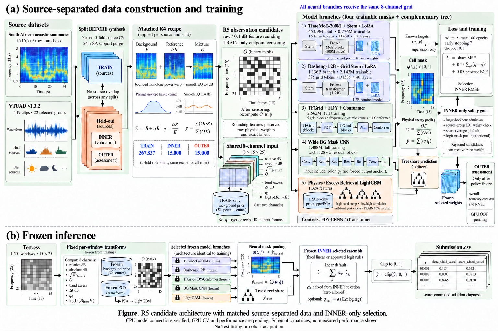
이전 R2 완료 도식 보기 · 현재 구조와 구분
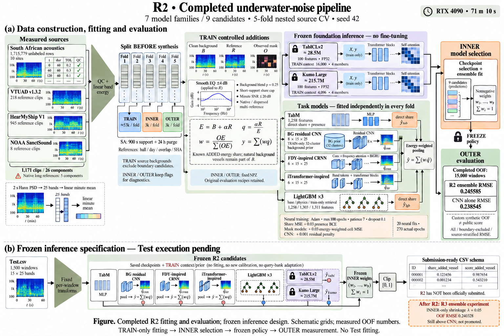